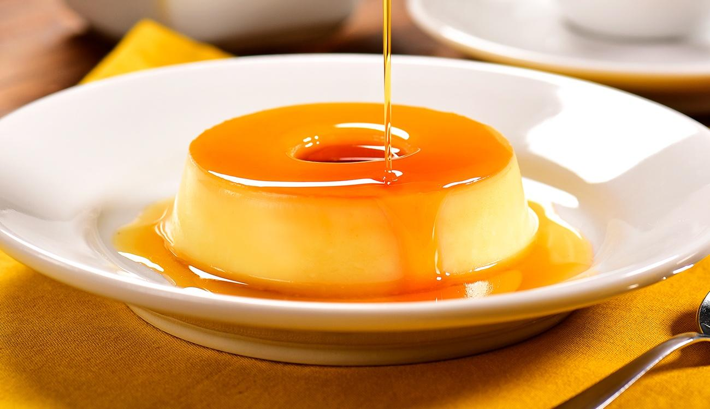

Aprenda como fazer um pudim para seu almoço de domingo
Abaixo Passo a passo com os ingredientes
Ingredientes
Uma das sobremesas mais populares em todo o mundo, o pudim conquista corações.
Esta receita fácil e rápida não vai ao forno e fica com um resultado maravilhoso, bem lisinha e cremosa! É de dar água na boca!
Calda
1/2 xícara de chá de açúcar
2 colheres de sopa de água
Pudim
1 lata de Leite Condensado
2 xícaras de chá de leite
5 colheres de sopa de Amido de Milho Maizena
1 ovo
1 colher de chá de essência de baunilha

MODO DE PREPARO CALDA
Em uma panela pequena, coloque o açúcar e leve ao fogo médio por aproximadamente 5 minutos, ou até o açúcar derreter e formar um caramelo claro.
Junte a água e misture bem.
Retire do fogo, deixe a calda esfriar levemente e distribua em uma fôrma de furo central (18 cm de diâmetro). Comece pelo centro da fôrma e vá girando-a para que o caramelo possa aderir também nas laterais. Reserve.
MODO DE PREPARO PUDIM
Em uma panela, coloque o leite, o leite condensado, o ovo, o amido de milho MAIZENA® e a essência de baunilha.
Misture bem os ingredientes até a MAIZENA® dissolver.
Cozinhe em fogo médio, mexendo sempre, por 3 a 4 minutos, ou até ficar cremoso.
Disponha na forma reservada, deixe esfriar e leve à geladeira por 4 horas, ou até ficar firme.
Desenforme o pudim sobre um prato e sirva em seguida.
Dados copilados e adaptados do Site abaixo, clique no botão